Navigate along a corridor with one obstacle: learning#
In this notebook we try to learn a policy to navigate in a corridor with one obstacle. We fix the model (an MLP with two layers with 128 neurons) and applies three learning algorithms, providing during training more or less the same number of simulation steps:
Behavioral cloning (IL)
DAgger (IL)
SAC (RL)
[1]:
import numpy as np
from navground import core, sim
from navground_learning.scenarios.corridor_with_obstacle import CorridorWithObstacle
[2]:
import datasets.utils
import tqdm.autonotebook
import imitation.algorithms.bc
datasets.utils.tqdm = tqdm.autonotebook.tqdm
imitation.algorithms.bc.tqdm = tqdm.autonotebook
datasets.utils.disable_progress_bar()
[12]:
import numpy as np
import gymnasium as gym
from navground import core, sim
from navground_learning.scenarios.corridor_with_obstacle import CorridorWithObstacle
from navground_learning import ControlActionConfig, ObservationConfig
from navground_learning.reward import SocialReward
from navground_learning.il.utils import make_venv
scenario = sim.load_scenario("""
type: CorridorWithObstacle
length: 1.0
width: 1.0
min_radius: 0.2
max_radius: 0.2
groups:
-
type: thymio
number: 1
radius: 0.08
control_period: 0.05
color: gold
kinematics:
type: 2WDiff
wheel_axis: 0.094
max_speed: 0.12
behavior:
type: HL
optimal_speed: 0.12
horizon: 10
tau: 0.25
eta: 0.5
safety_margin: 0.05
barrier_angle: 1.0
state_estimation:
type: Bounded
range: 1.0
update_static_obstacles: true
""")
sensor = sim.load_state_estimation("""
type: Combination
sensors:
- type: Boundary
min_y: 0
max_y: 1
range: 1
- type: Discs
number: 1
range: 1
max_speed: 0.0
max_radius: 0.0
include_valid: false
""")
duration = 40.0
time_step = 0.1
action_config = ControlActionConfig(max_acceleration=1.0, max_angular_acceleration=10.0,
use_acceleration_action=True)
observation_config = ObservationConfig(include_target_distance=False, include_velocity=True,
include_angular_speed=True, flat=True)
# we do not penalize small safety_margin violations
env = gym.make('navground',
scenario=scenario,
sensor=sensor,
action=action_config,
observation=observation_config,
time_step=time_step,
max_duration=duration,
reward=SocialReward(safety_margin=0.04))
test_venv, *_ = make_venv(env, parallel=False, n_envs=5, rng=np.random.default_rng(123))
/Users/jerome.guzzi/Dev/venv/ros_jazzy/lib/python3.12/site-packages/gymnasium/core.py:311: UserWarning: WARN: env.num_envs to get variables from other wrappers is deprecated and will be removed in v1.0, to get this variable you can do `env.unwrapped.num_envs` for environment variables or `env.get_wrapper_attr('num_envs')` that will search the reminding wrappers.
logger.warn(
We define a functions to plot and display runs when the agents follow a ML policy
[15]:
env.observation_space
[15]:
Box([ 0. 0. -1. -1. -2.55319149 -1.
-1. -0.12 ], [1. 1. 1. 1. 2.55319149 1.
1. 0.12 ], (8,), float64)
[13]:
observation_config
[13]:
ObservationConfig(dtype='', max_speed=inf, max_angular_speed=inf, dof=None, flat=True, history=1, include_target_distance=False, include_target_distance_validity=False, max_target_distance=inf, include_target_direction=True, include_target_direction_validity=False, include_velocity=True, include_angular_speed=True, include_radius=False, include_target_speed=False, include_target_angular_speed=False, max_radius=inf)
[4]:
from matplotlib import pyplot as plt
from navground_learning.behaviors import PolicyBehavior
from navground_learning.evaluate import make_experiment_with_env, evaluate_expert
from navground.sim.pyplot_helpers import plot_runs
def plot_test_runs(policy, color='blue', figsize=(12, 8), cols=4, rows=5, step=30, seed=0):
fig, _ = plt.subplots(rows, cols, figsize=figsize)
exp = make_experiment_with_env(env=env.unwrapped, policy=policy)
exp.number_of_runs = rows * cols
exp.record_config.pose = True
exp.run_index = seed
exp.run()
plot_runs(exp.runs.values(), columns=cols, step=step, agent_color=lambda a: color, fig=fig);
def plot_comparison_test_runs(policies, figsize=(12, 8), cols=4, rows=5, step=30, seed=0):
fig, _ = plt.subplots(rows, cols, figsize=figsize)
for i, (policy, color, label) in enumerate(policies):
exp = make_experiment_with_env(env=env.unwrapped, policy=policy)
exp.number_of_runs = rows * cols
exp.record_config.pose = True
exp.run_index = seed
exp.run()
plot_runs(exp.runs.values(), columns=cols, step=step, agent_color=lambda a: color, fig=fig,
with_shape=False, label=label, with_world=i==0);
Imitation learning with Behavior Cloning#
[5]:
log_folder = 'logs/corridor_with_obstacle_v2'
[6]:
from navground_learning.il import bc
bc_trainer = bc.Trainer(env, log_formats=['tensorboard', 'csv'], log_directory=f'{log_folder}/bc',
net_arch=[128, 128], parallel=False, n_envs=4,
bc_kwargs={'l2_weight': 0, 'ent_weight': 1e-2, 'batch_size': 32})
/Users/jerome.guzzi/Dev/venv/ros_jazzy/lib/python3.12/site-packages/gymnasium/core.py:311: UserWarning: WARN: env.num_envs to get variables from other wrappers is deprecated and will be removed in v1.0, to get this variable you can do `env.unwrapped.num_envs` for environment variables or `env.get_wrapper_attr('num_envs')` that will search the reminding wrappers.
logger.warn(
[7]:
import time
start = time.time()
bc_trainer.collect_runs(750)
print(f'Collecting runs took {time.time() - start: .0f} seconds')
Collecting runs took 7 seconds
[8]:
start = time.time()
bc_trainer.train(
log_rollouts_venv=test_venv,
log_rollouts_n_episodes=50,
log_interval=500,
n_epochs=4,
progress_bar=False
)
print(f'Training took {time.time() - start: .0f} seconds')
Training took 63 seconds
Even with a quite large number of steps (about 100K per epoch), it fails to learn a decent policy
[9]:
import pandas as pd
df = pd.read_csv(f'{bc_trainer.logger.get_dir()}/progress.csv')
df.plot(y='rollout/return_mean', x='bc/samples_so_far');
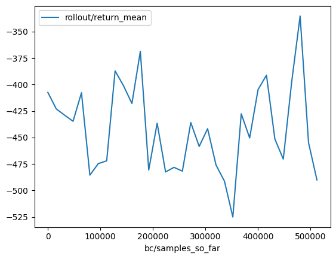
[10]:
plot_test_runs(policy=bc_trainer.policy, color='orange');
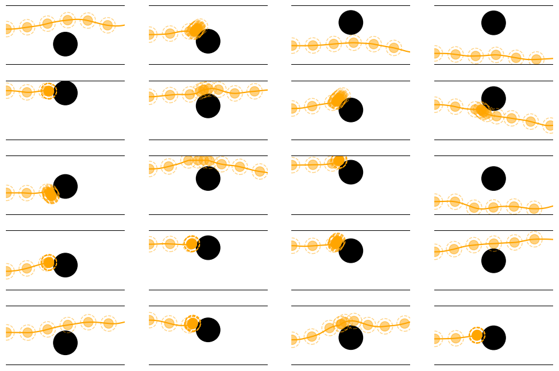
[11]:
from stable_baselines3.common.evaluation import evaluate_policy
bc_rewards, steps = evaluate_policy(bc_trainer.policy, test_venv, 1000, return_episode_rewards=True)
np.min(bc_rewards), np.mean(bc_rewards), np.median(bc_rewards), np.max(bc_rewards)
[11]:
(-670.601806, -359.04048300899996, -415.0369845, -0.272681)
[12]:
plt.hist(bc_rewards, bins=10, density=True, color="orange");
plt.xlabel('reward')
plt.ylabel('probability');
plt.title("Policy trained with BC");
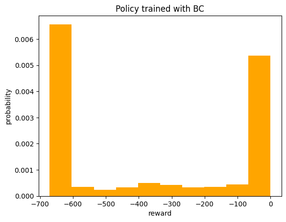
[13]:
import pathlib
bc_trainer.save(pathlib.Path(f"{log_folder}/bc/policy"))
Imitation learning with DAgger#
[14]:
from navground_learning.il import dagger
dagger_trainer = dagger.Trainer(env, log_formats=['tensorboard', 'csv'], log_directory=f"{log_folder}/dagger",
net_arch=[128, 128], parallel=False, n_envs=4,
bc_kwargs={'l2_weight': 0, 'ent_weight': 1e-2, 'batch_size': 128})
/Users/jerome.guzzi/Dev/venv/ros_jazzy/lib/python3.12/site-packages/gymnasium/core.py:311: UserWarning: WARN: env.num_envs to get variables from other wrappers is deprecated and will be removed in v1.0, to get this variable you can do `env.unwrapped.num_envs` for environment variables or `env.get_wrapper_attr('num_envs')` that will search the reminding wrappers.
logger.warn(
[15]:
import time
start = time.time()
dagger_trainer.train(
total_timesteps=100_000,
rollout_round_min_episodes=25,
bc_train_kwargs={
'log_rollouts_venv': test_venv,
'log_rollouts_n_episodes': 50,
'log_interval': 500,
'n_epochs': 1,
'progress_bar': False,
}
)
print(f'Training took {time.time() - start: .0f} seconds')
/Users/jerome.guzzi/Dev/Others/imitation/src/imitation/data/rollout.py:337: UserWarning: Cannot set deterministic_policy=True when policy is a callable, since deterministic_policy argument is ignored.
warnings.warn(
Training took 68 seconds
About 60000 steps are enough to learn a decent policy
[16]:
import pandas as pd
df = pd.read_csv(f'{dagger_trainer.logger.get_dir()}/progress.csv')
df = df[df['dagger/total_timesteps'].notna()]
df.plot(y='rollout/return_mean', x='dagger/total_timesteps');
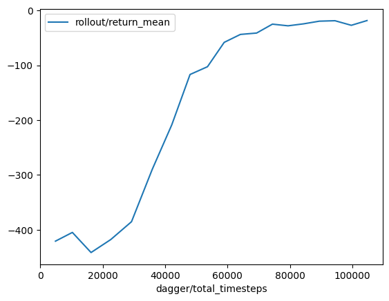
[17]:
plot_test_runs(policy=dagger_trainer.policy, seed=123, color='green')
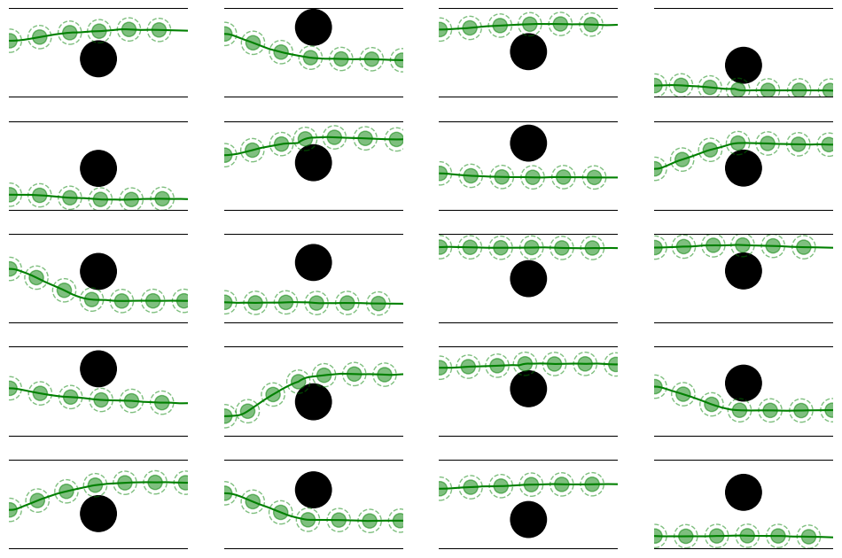
[18]:
from stable_baselines3.common.evaluation import evaluate_policy
dagger_rewards, steps = evaluate_policy(dagger_trainer.policy, test_venv, 1000, return_episode_rewards=True)
np.min(dagger_rewards), np.mean(dagger_rewards), np.median(dagger_rewards), np.max(dagger_rewards)
[18]:
(-337.335068, -18.026401288000002, -10.173982, -0.876535)
[19]:
plt.hist(dagger_rewards, bins=10, density=True, color="green");
plt.xlabel('reward')
plt.ylabel('probability');
plt.title("Policy trained with DAgger");
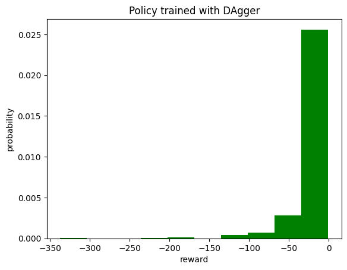
[20]:
import pathlib
dagger_trainer.save(pathlib.Path(f"{log_folder}/dagger/policy"))
Reinforcement learning with SAC#
[21]:
from stable_baselines3 import SAC
from stable_baselines3.common.logger import configure
logs = f"{log_folder}/SAC"
model = SAC("MlpPolicy", env, policy_kwargs={'net_arch': [128, 128]})
model.set_logger(configure(logs, ["csv", "tensorboard"]))
[22]:
import time
start = time.time()
model.learn(total_timesteps=100000, progress_bar=True, tb_log_name="SAC");
print(f'Training took {time.time() - start: .0f} seconds')
Training took 327 seconds
It learns at good performing policy in about 50000 steps. It takes about 5x longer compared to Dagger but the policy is also better, especialy the worst case.
[23]:
import pandas as pd
df = pd.read_csv(f'{logs}/progress.csv')
df.plot(y='rollout/ep_rew_mean', x='time/total_timesteps');
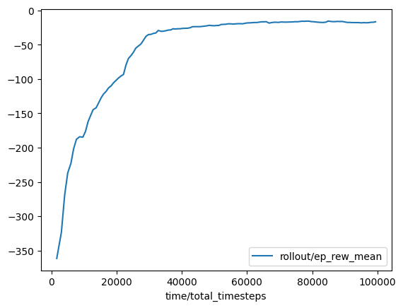
[24]:
plot_test_runs(policy=model.policy, seed=123, color='blue')
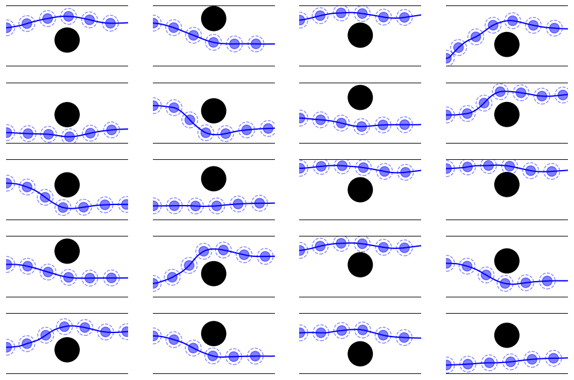
[25]:
from stable_baselines3.common.evaluation import evaluate_policy
sac_rewards, steps = evaluate_policy(model.policy, test_venv, 1000, return_episode_rewards=True)
np.min(sac_rewards), np.mean(sac_rewards), np.median(sac_rewards), np.max(sac_rewards)
[25]:
(-41.496797, -9.957440417, -7.724690000000001, -2.222684)
[26]:
plt.hist(sac_rewards, bins=10, density=True, color='blue');
plt.xlabel('reward')
plt.ylabel('probability');
plt.title("Policy trained with SAC");
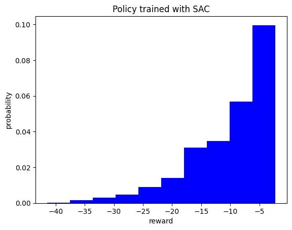
[27]:
model.save(f"{logs}/model")
Comparision with HL#
[28]:
hl_rewards = evaluate_expert(env.unwrapped, runs=1000, seed=0)
[29]:
plt.hist(sac_rewards, bins=np.linspace(np.quantile(sac_rewards, 0.02), np.quantile(sac_rewards, 0.98), 10), density=True, label="SAC", alpha=0.5)
plt.hist(bc_rewards, bins=np.linspace(np.quantile(bc_rewards, 0.02), np.quantile(bc_rewards, 0.98), 30), density=True, label="BC", alpha=0.5)
plt.hist(dagger_rewards, bins=np.linspace(np.quantile(dagger_rewards, 0.02), np.quantile(dagger_rewards, 0.98), 10), density=True, label="DAgger", alpha=0.5)
plt.hist(hl_rewards, bins=np.linspace(np.quantile(hl_rewards, 0.02), np.quantile(hl_rewards, 0.98), 10), density=True, label="HL", alpha=0.5)
plt.xlabel('reward')
plt.ylabel('probability');
plt.xlim(-50, 0)
plt.legend();
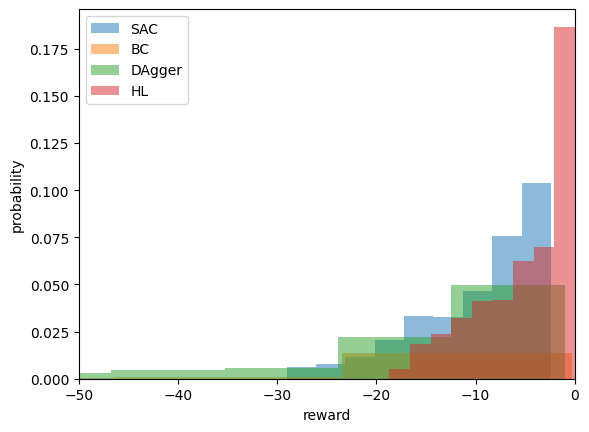
[30]:
plot_comparison_test_runs(policies=((bc_trainer.policy, 'orange', 'BC'),
(dagger_trainer.policy, 'green', 'DAgger'),
(model.policy, 'blue', 'SAC'),
(None, 'red', 'Expert')), seed=123, step=10, cols=4, rows=4)
plt.legend(bbox_to_anchor=(-.75, 0), ncols=4);
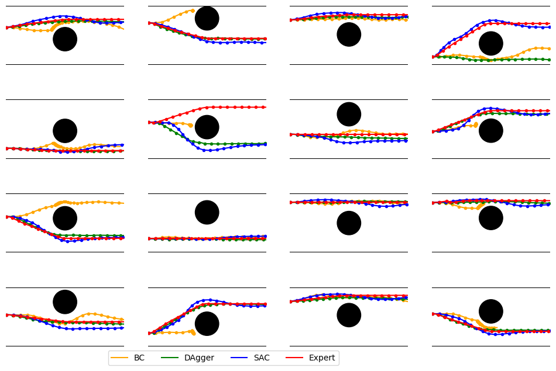